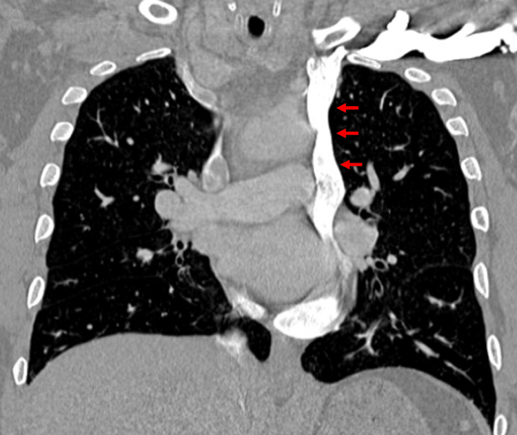

Ficha del catálogo
Persistencia de la vena cava superior izquierda
- Sistema
- Cardiovascular
- Modalidad
- TC
- Región
- Tórax
- Dificultad
- Intermedio
Es la variante más frecuente del retorno venoso sistémico torácico y consiste en la permanencia de un conducto venoso izquierdo que desciende por delante del hilio pulmonar y desemboca casi siempre en el seno coronario. Suele ser un hallazgo incidental sin repercusión funcional, pero adquiere importancia práctica en la colocación de catéteres, marcapasos y cánulas de circulación extracorpórea. Se asocia con mayor frecuencia a otras anomalías cardiacas.
Técnica
La tomografía con contraste identifica con claridad el trayecto vertical del vaso a la izquierda del arco aórtico y su desembocadura en un seno coronario dilatado. En el ecocardiograma la clave es la dilatación del seno coronario, que se confirma inyectando suero salino agitado por el brazo izquierdo y viendo la llegada de burbujas al seno antes que a la aurícula derecha. La resonancia ofrece la misma información sin radiación.
Qué observar
- Estructura vascular vertical a la izquierda del arco aórtico y del hilio
- Trayecto descendente por delante de la arteria pulmonar izquierda
- Desembocadura en un seno coronario dilatado
- Presencia o ausencia de la vena braquiocefálica izquierda de conexión
- Calibre y permeabilidad de la vena cava superior derecha
- Anomalías cardiacas asociadas y posición de catéteres o electrodos
Hallazgos
En los cortes axiales se aprecia una estructura tubular opacificada situada a la izquierda del arco aórtico que desciende y se hace posterior hasta desembocar en el surco auriculoventricular, donde el seno coronario aparece claramente dilatado. En muchos casos la vena braquiocefálica izquierda está ausente o es hipoplásica. Un catéter introducido por el brazo izquierdo sigue un trayecto paramediastínico izquierdo insólito que puede alarmar si se desconoce la variante.
Perlas
Un seno coronario dilatado sin causa aparente es la pista que debe llevar a buscar esta variante, y su reconocimiento evita interpretar como mal posicionado un catéter que desciende por el borde izquierdo del mediastino cuando en realidad se encuentra dentro de un conducto venoso normal para ese paciente.
Diagnóstico diferencial
- Catéter en posición arterial
- El trayecto sigue el contorno aórtico y la sangre aspirada es arterial, con opacificación aórtica precoz.
- Vena intercostal superior izquierda prominente
- Es un vaso corto y arqueado junto al arco aórtico que no desciende hasta el seno coronario.
- Seno coronario dilatado por presión auricular derecha elevada
- No se identifica ningún conducto venoso izquierdo y existe insuficiencia cardiaca derecha.
- Continuación de la ácigos por interrupción de la cava inferior
- El vaso dilatado es la vena ácigos en el mediastino posterior derecho, con cava inferior ausente.
Simuladores
- Vena intercostal superior izquierda prominente junto al arco
- Conducto linfático dilatado en el mediastino superior izquierdo
- Colateral venosa por obstrucción de la vena cava superior derecha
Por modalidad
- TC
- Muestra el trayecto completo, la desembocadura en el seno coronario y las variantes asociadas.
- US
- El ecocardiograma detecta el seno coronario dilatado y confirma la variante con suero salino agitado por el brazo izquierdo.
Protocolo
Tomografía torácica con contraste intravenoso y cortes finos, con reconstrucciones coronales que sigan el vaso desde la región supraclavicular hasta el surco auriculoventricular. Conviene registrar el brazo por el que se inyectó el contraste. En ecocardiografía se realiza inyección de suero salino agitado por vía braquial izquierda con visualización dirigida del seno coronario.
Clasificación
Errores frecuentes
- Informar como mal posicionado un catéter que discurre por esta vena
- No explicar la causa de un seno coronario dilatado
- Confundir el vaso con una colateral por obstrucción de la cava derecha

vena cava superior izquierda variante anatómica seno coronario catéter venoso tomografía retorno venoso mediastino